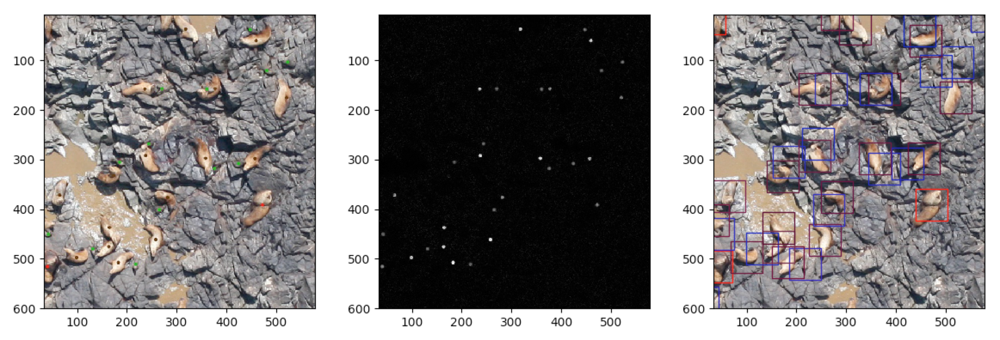
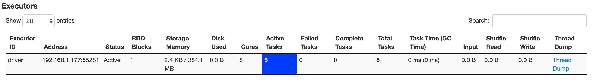
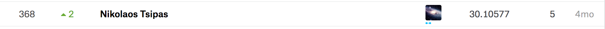

- Mon 12 June 2017
- Machine Learning
- #convnets, #convolutional neural networks, #machine learning, #spark, #parallel processing, #python
With this post I will attempt to describe the approach I followed in order to analyze 100GB of image data for the purpose of identifying sea lions in aerial photos as part of this kaggle competition. The reason why I found this competition an interesting challenge was threefold: was for a good cause, was a good opportunity to apply recently acquired knowledge about convnets/tensorflow and finally, was a nice example of using spark as a parallel processing engine to speed up single-threaded applications.
The competition
If you are not familiar with kaggle competitions, most of the time they follow the same pattern which involves a dataset, provided to the contestants, and a submission format, usually in csv, which must be used as a template to submit results back to kaggle. Kaggle has the corresponding ground truth data for the submissions of the contestants and based on a predefined metric function a result is calculated. In this case, the above were as follows:
- Dataset
The dataset consists of 18636 images used as test data and 949 images used as training data. In the case of training data, a second, annotated version of those 949 images is provided, in which each sea lion is annotated using a colored dot. The size of the provided dataset in bytes is close to 100GB, with 86GB comprising the test data and around 10GB the training data. -
Submission format
The classification results are submitted using the following csv format. Thetest_idrepresents the test image from which the corresponding counts for each type of sea lion have been calculated. It's obvious that during the evaluation the only processing that takes place in kaggle is the comparison of the submitted results with the ground truth i.e. validation is quick.test_id,adult_males,subadult_males,adult_females,juveniles,pups 0,1,1,1,1,1 1,1,1,1,1,1 2,1,1,1,1,1 etc -
Evaluation metric
The submitted results are evaluated using the Root Mean Square Error (RMSE) metric, averaged over the available columns (i.e. for the different types of sea lions)\(RMSE_{avg} = \frac{1}{5}(\sqrt{\frac{1}{n} \sum_{i=1}^{n} (y_{adult-males} - \hat{y}_{adult-males})^2} + ... + \sqrt{\frac{1}{n} \sum_{i=1}^{n} (y_{pups} - \hat{y}_{pups})^2})\)
Matching the Dots
Or to be more accurate: finding and counting the dots. The training dataset images come in two versions, a plain image and a dotted image. On the dotted image each dot represents the location of a sea lion, while its colour indicates the corresponding sea lion type/class. As already mentioned, there are 5 types/classes of sea lions in the training data adult_males, subadult_males, adult_females, juveniles, pups.

In the above figure three different versions of an example training image are presented. On the left side, the dotted version, in the middle, the absolute difference between the dotted and non-dotted images and finally, on the right side, the 64x64 pixels bounding boxes indicating the actual regions of the image that will be used as training samples for each class. The Laplacian of Gaussian blob detection algorithm is used to get the locations of the dots appearing on the middle image and when those locations are retrieved the type/colour of the corresponding sea lion is extracted from the original dotted training image.
This whole, devious procedure is required because of the way the training data were provided by the competition organisers (i.e. as part of the image) so the coordinates and class information need to be extracted through some kind of post-processing. For each training image a dictionary like the following is generated.
{
"sea-lions": {
"adult_males": [
[dot_x, dot_y],
...
],
"subadult_males": [ ... ],
"adult_females": [ ... ],
"juveniles": [ ... ],
"pups": [ ... ],
},
"filename": image_filename
}
Spark sparks creative (and a bit unorthodox) thinking
To speedup the above procedure, which was underutilising the multiple cores available on my macbook, an attempt to parallelise it using spark was made. Spark is quite straightforward to run locally in standalone mode, and will by default utilise all available cpu resources. As long as Java is installed, the binaries can be downloaded from https://spark.apache.org/downloads.html and after extracting the contents of the archive a spark job can be executed as follows:
./spark-2.1.1-bin-hadoop2.7/bin/spark-submit my_pyspark_job.py
With this spark job we wanted to achieve the following:
- From each training image extract metadata with the coordinates of the sea lions
- From each training image generate 64x64 thumbnails centered on the coordinates extracted in the previous step
Let's go through the actual code.
1 2 3 4 5 6 7 8 9 10 11 12 13 14 15 16 17 18 19 20 | |
- lines 7-9: Spark job initialisation and metadata
- line 11:
filepathscontains the absolute locations of the training images after some filtering to remove a subset of images flagged as inappropriate for training by the organisers - line 14: This is an example of a Resilient Distributed Dataset (RDD) in spark. The
parallelizefunction receives as input a list containing the available training images and using themapfunction applies the metadata extraction functionutil.extract_training_data(training_image)to each one of them. In spark terminology,parallelizeandmapare considered "transformations" and as such no processing is triggered by them. The processing is triggered using an "action", which in this case is the.collect()call which fetches the entire RDD to the driver. The RDD returned is a list with the metadata dictionaries described earlier. The following screenshot from the spark ui shows that only one executor is created when running locally in standalone mode and that executor is able to execute 8 tasks in parallel which in this case is equal to the 4 cores x 2 threads of an intel i7 cpu.  - lines 16-17: Metadata written on disk in json form
- line 20: Another RDD is formed here, this time
resultscontains the list of dicts created earlier while the map functionutil.extract_training_images(image_metadata)receives as input one of those dicts. The map function generates 64x64 thumbnails centered on the dots detected in the previous step which are written on disk using the following templateimg_<image-filename>-<class>-<thumbnail-no>-<offset><extension. An offset of[-1, 0, 1]is used to produce three thumbnails from each dot, two of which are not exactly centered but moved 1 pixel diagonally up and down.
Training a Convolutional Neural Network
At this point we have a number of 64x64 pixel thumbnails for each class that can be used to train a sea lion classification algorithm.
Using Keras on top of Tensorflow we can create a simple convolutional neural network (CNN) which can be used for 6 class classification. The total number of classes is 6 because we have 5 classes of sea lions plus one class for thumbnails not matching any of those 5 classes.
The model is defined with the following function:
1 2 3 4 5 6 7 8 9 10 11 12 13 14 15 16 17 18 19 20 21 22 23 24 25 | |
The above model is a very naive and standard CNN. In line 4 a lambda function is used to normalise the pixel values in the range of [-0.5, 0.5].
The 64x64 thumbnails given as input have 3 channels (RGB).
Brute forcing object detection
In order to detect the number of sea lions on the test images the trained model was utilised in another spark job. The aim in this case was to receive the count of sea lions from every image in a dictionary like the following:
counts = {
'adult_females': 0,
'adult_males': 0,
'juveniles': 0,
'non_seal': 0,
'pups': 0,
'subadult_males': 0,
}
A new map function was defined, in which the input image was partitioned in non overlapping 64x64 thumbnails and each one of those was classified in one of the 6 available classes.
results = sc.parallelize(files).map(util.count_sea_lions).collect()
The classification step in the count_sea_lions function was as follows:
1 2 3 4 5 6 | |
Vertical Scaling on AWS EC2
Running the above spark jobs for the classification of 86GB of test images was a very slow process on my macbook. In order to speed things up an EC2 instance with a significantly higher number of cores was employed.
Although spark is normally used with horizontal scaling, it can also be used to parallelise processes on multi-core machines. The vertical scaling was also chosen because I tried to avoid using AWS EMR and complex master-slave setups.
Picking the right ec2 instance
As the task seemed to be more CPU bound and optimising for cost was a nice-to-have I started looking for an ec2 spot instance that would satisfy both. To avoid using the ec2 price explorer provided on the AWS console UI I wrote a small script to present the currently available ec2 instances and their cost based on a number of "features". For this particular task I needed to find an ec2 instance with at with 32 cores and the lowest price per core.
The script is availabe on github: https://github.com/nicktgr15/ec2-spot-instance-finder
Based on the results r4.8xlarge was chosen.
Putting it all together
At this point I had: * a trained model * the test dataset available on the ec2 instance (could have been s3 if it was bigger) * spark configured on the 32-core ec2 instance (the setup was exactly the same as the one I had locally) * a job that was receiving as input the filename of each one of the test images and was producing an output like the following
{
"adult_males": 2,
"juveniles": 30,
"pups": 4,
"filename": "15024.jpg",
"adult_females": 5,
"non_seal": 5005,
"subadult_males": 0
}
The spark job took around 15 hours to complete.
The results from the 18636 test images were aggregated and formatted to match the competition template. The first few lines from the submission file were as follows:
test_id,adult_males,subadult_males,adult_females,juveniles,pups
0,3,0,9,14,3
1,3,0,9,6,10
2,5,0,18,26,42
3,3,1,17,36,9
4,48,0,78,52,40
5,1,0,28,12,41
6,2,0,14,12,45
...
The file was submitted to kaggle and as expected it received a quite low score mainly due to the naivety of the approach.

The end
The focus of this experiment was mainly on:
- having a hands-on experience with spark employed as a parallel processing engine (on and off AWS)
- using convnets with a Big dataset (this was the first time I was using convnets for an image classification task)
- having a complete submission for the competition by spending just a couple of days on the problem
The amount of time spent on building the model was kept to as little as possible and of course there are many improvements that could be done on that side. Similarly, algorithms like Selective Search could be employed to speed things up during the classification etc.
Closing, I'd say that I definitely learned a lot by participating and I hope that you also learned something new in this blog post. I'm looking forward to comments and further discussion!